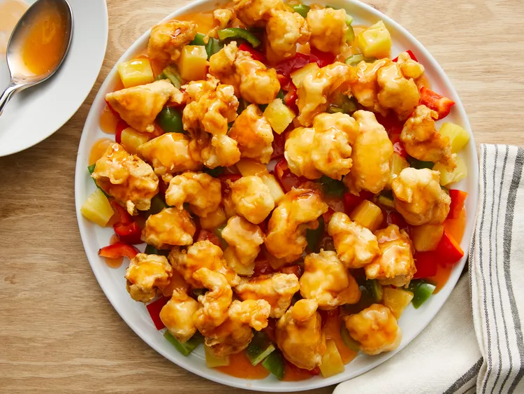

Sweet and Sour Chicken

This sweet and sour chicken recipe makes crispy fried chicken pieces with pineapple
and bell pepper served with a homemade tangy and sweet sauce.
Ingredients
- 1¾ cups water (divided)
- 1 (8 oz) can pineapple chunks, drained (reserve juice)
- ¾ cup white sugar
- ½ cup distilled white vinegar
- 2 drops orange food coloring (optional)
- ¼ cup cornstarch (for slurry)
- 2¼ cups self-rising flour
- 2 tbsp vegetable oil
- 2 tbsp cornstarch (for batter)
- 1 large egg
- ½ tsp salt
- ¼ tsp ground white pepper
- 1½ cups water (for batter)
- 8 boneless, skinless chicken breast halves, cut into 1" cubes
- 1 quart vegetable oil (for frying)
- 2 green bell peppers, cut into 1" pieces
Steps
- In a saucepan, boil 1½ cups water with pineapple juice, sugar, vinegar, and food coloring; set aside.
- Make slurry: mix ¼ cup cornstarch with ¼ cup water until smooth; stir into sauce until slightly thickened.
- In a large bowl, combine flour, 2 tbsp oil, 2 tbsp cornstarch, egg, salt, and pepper. Gradually whisk in 1½ cups water to form batter.
- Add chicken to batter; stir to coat evenly.
- Heat oil to 360 °F (180 °C) in a deep skillet. Fry chicken until golden (~10 min); drain on paper towels.
- Arrange bell peppers, pineapple chunks, and chicken on a platter; pour the hot sauce over them.
- Serve immediately while hot.
Home